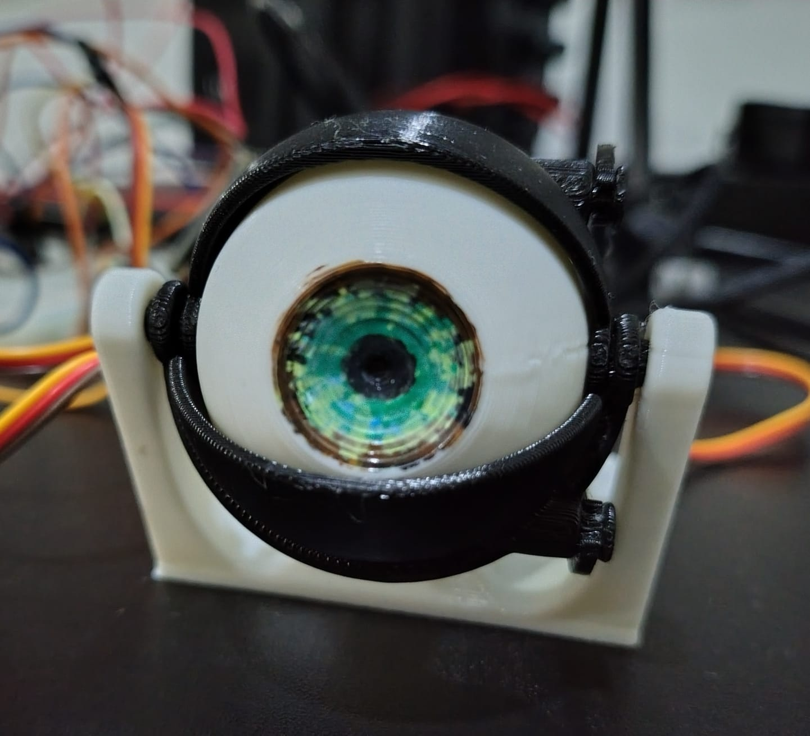
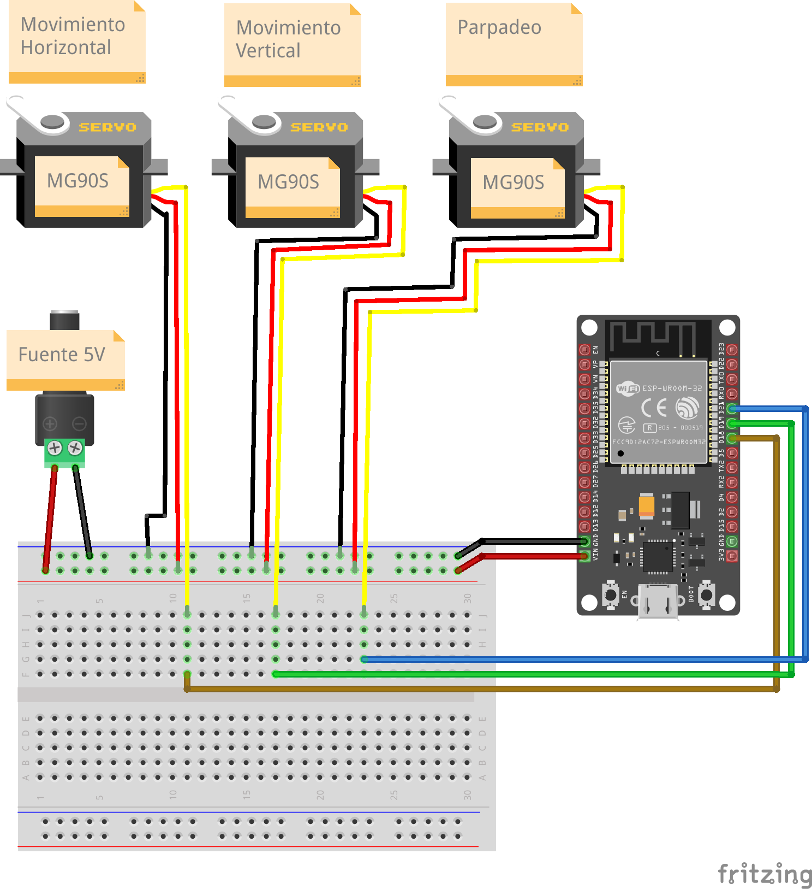

En este proyecto construí un ojo animatrónico impreso en 3D utilizando tres servomotores MG90S y un ESP32 como controlador principal.
El objetivo fue replicar y probar un diseño encontrado en la comunidad maker para comprender su funcionamiento mecánico, electrónico y de programación.
Este proyecto forma parte de la serie ‘Construyendo Proyectos de Internet’, donde selecciono proyectos interesantes, los construyo, los pruebo, los adapto cuando es necesario y documento mi experiencia.

Mi aporte al proyecto
- Impresión 3D de todas las piezas.
- Ensamble mecánico completo.
- Pintura manual del iris utilizando marcadores.
- Instalación de tres servomotores MG90S.
- Adaptación del proyecto para ESP32.
- Desarrollo y ajuste del código de control.
- Pruebas de funcionamiento y calibración de movimientos.
Conexiones utilizadas
Tres servomotores MG90S controlan el movimiento horizontal, el movimiento vertical y el párpado.
| Servomotor MG90S | Señal |
|---|---|
| Horizontal | GPIO 18 |
| Vertical | GPIO 19 |
| Párpado | GPIO 21 |

Materiales utilizados
Electrónica
- ESP32
- 3 servomotores MG90S
- fuente de alimentación de 5 V
- protoboard
- cables Dupont
Impresión 3D
- PLA blanco
- PLA negro
Herramientas
- destornillador
- tornillos
- marcadores para colorear el iris
Código fuente
#include <ESP32Servo.h>
Servo servoHorizontal;
Servo servoVertical;
Servo servoParpado;
const int pinHorizontal = 18;
const int pinVertical = 19;
const int pinParpado = 21;
// Horizontal
int centroHorizontal = 90;
int izquierda = 70;
int derecha = 120;
// Vertical
int centroVertical = 90;
int arriba = 30;
int abajo = 115;
// Párpado
int parpadoCasiCerrado = 40;
int parpadoMedio = 70;
int parpadoAbierto = 90;
void setup() {
servoHorizontal.attach(pinHorizontal, 500, 2400);
servoVertical.attach(pinVertical, 500, 2400);
servoParpado.attach(pinParpado, 500, 2400);
servoHorizontal.write(centroHorizontal);
servoVertical.write(centroVertical);
servoParpado.write(parpadoCasiCerrado);
delay(1000);
}
void loop() {
// Despierta el ojo
servoParpado.write(parpadoMedio);
delay(500);
servoParpado.write(parpadoAbierto);
delay(1000);
// Mirar izquierda
servoHorizontal.write(izquierda);
delay(1000);
// Centro
servoHorizontal.write(centroHorizontal);
delay(500);
// Mirar derecha
servoHorizontal.write(derecha);
delay(1000);
// Centro
servoHorizontal.write(centroHorizontal);
delay(500);
// Mirar arriba
servoVertical.write(arriba);
delay(1000);
// Centro
servoVertical.write(centroVertical);
delay(500);
// Mirar abajo
servoVertical.write(abajo);
delay(1000);
// Centro
servoVertical.write(centroVertical);
delay(1000);
// Cerrar un poco el ojo
servoParpado.write(parpadoMedio);
delay(400);
servoParpado.write(parpadoCasiCerrado);
delay(1000);
}Lo que aprendí
- Control de servomotores con ESP32.
- Alimentación adecuada de múltiples servos.
- Calibración de movimientos mecánicos.
- Integración entre impresión 3D y electrónica.
- Adaptación de proyectos open source para fines educativos.
Posibles mejoras futuras
Estas son ideas futuras, no funcionalidades implementadas actualmente.
- Seguimiento ocular mediante cámara.
- Control remoto desde aplicación web.
- Integración con reconocimiento facial.
- Movimiento más natural mediante interpolación de posiciones.
- Versión binocular con dos ojos sincronizados.
Resultado final
El proyecto fue ensamblado y probado exitosamente. El ojo puede mover el iris en diferentes direcciones y controlar el párpado mediante tres servomotores, demostrando una plataforma interesante para futuros desarrollos en robótica educativa y animatrónica.